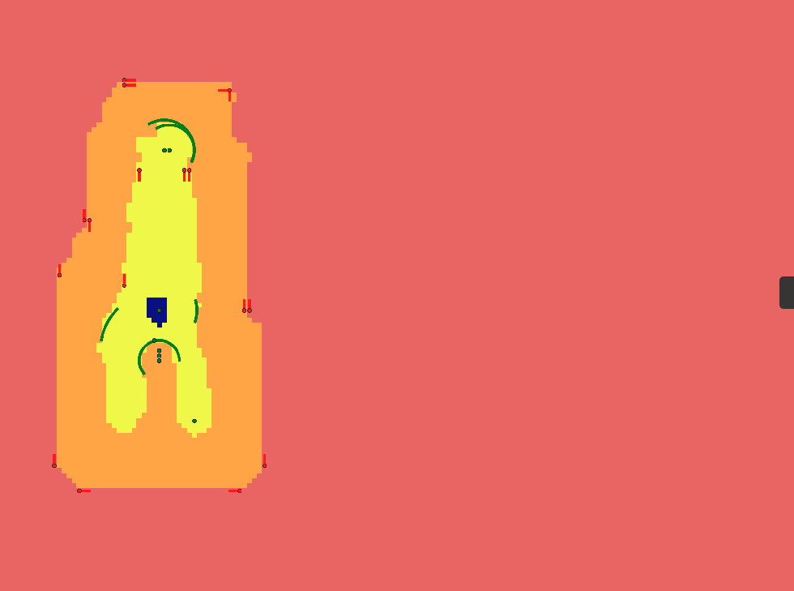

AI Systems Engineer
Final-year engineering student (UTBM / UQAC), specialized in computer vision and deep learning. Focus: transforming research work into robust, optimized, and deployable systems.
Seeking a 6-month internship in applied R&D or ML engineering (September 2026).
See My WorkMy journey through academia and industry
University of Quebec at Chicoutimi (UQAC)
Advanced master's program in artificial intelligence with focus on cutting-edge techniques:
AnotherBrain
Segment moving objects in video streams without deep neural networks, for low-power embedded systems (neuromorphic computing).
Why naive approaches fail: background subtraction fails on dynamic backgrounds; deep detectors (YOLO, Mask R-CNN) too expensive for edge; frame difference generates excessive false positives.
Hypothesis: local entropy measured over a spatio-temporal window isolates moving regions without supervised learning. Based on Ma & Zhang (STEI, 2001) and Guo Jing (DSTEI, 2004).
Constraints: real-time target (>15 FPS on mid-range GPU), limited memory (no full history storage).
Segmentation of multiple objects in motion without deep learning (bio-inspired approach)

Human feature extraction (bio-inspired algorithm)
AGH University of Science and Technology, Kraków
5-month international exchange focusing on medical imaging and biometrics:
Virtual Worlds & Artificial Vision
Comprehensive computer science engineering curriculum with specialization in virtual worlds and artificial vision:
Beyond algorithms: deployment constraints, optimization, rigor
cProfile, nvprof, CuPy for bottleneck identification. ×12 measured speedup on AnotherBrain project.
Experience with real-time constraints (~15 FPS) and limited memory. Awareness of dev vs production gaps.
Faithful implementation of research papers (STEI, DSTEI). Systematic comparison with published results. CSO collaboration for hypothesis validation.
Explore my recent work
Scientific documentary creation (side project)
A conversation with a mathematician whose work focuses on the geometry of quantum mechanics, shedding new light on the history and nature of "spooky action at a distance."
Video is my medium for preserving the essence of the places I explore.
Other projects from my GitHub
I'm always open to discussing new projects, creative ideas, or opportunities to be part of your visions.